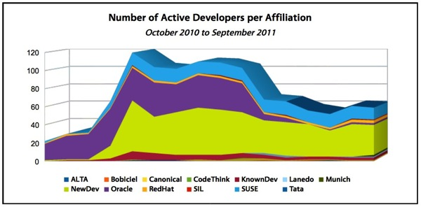
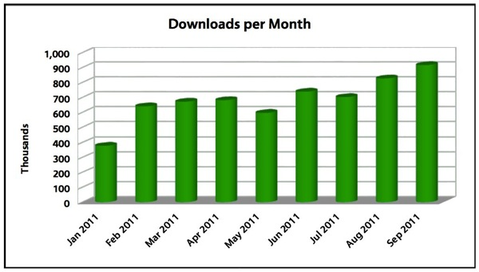

LibreOffice 生日快樂！

 ◎ 本文轉載自 LibreSMS 開源短訊: LibreOffice 生日快樂！
◎ 本文轉載自 LibreSMS 開源短訊: LibreOffice 生日快樂！
一年前，LibreOffice 團隊毅然宣佈要退出 Oracle 掌控的 OpenOffice，成為獨立的計劃，並很快地得到各界相挺、繼而壯大；如今，LibreOffice 已經一歲了！我們就來看看，這一年之中 LibreOffice 有著什麼樣的成長。
首先，要恭喜它在不久前榮獲 IDG1 的 2011 年 InfoWorld 最佳開源大獎 (Infoworld Bossie Awards)、以及 OWF2 的實驗獎 (OWF Experiment Awards)。開源軟體大獎的得獎理由中指出，與 OpenOffice 相比，LibreOffice 的速度、穩定性和功能性都有不小的進步，但更重要的是，新功能展現出他們對於改進效能的重視，不再因襲舊規，也讓這個產品更像個商用軟體（而非只能讓個人使用）。

▲ 圖2：LibreOffice 的活躍開發者，依照開發者所屬的組織區分
LibreOffice 能有這樣的進步，志願開發者的貢獻自然功不可沒。文件基金會 (The Document Foundation) 的公告中表示，在社群裡，現在已有 330 名貢獻者參與了這個計劃，而企業贊助和獨立參與者之間也有著良好的平衡，例如原 OpenOffice 志願開發者和 RedHat 公司都各自貢獻了 20% 的指令列，而新進的開發者和 SUSE 公司的貢獻也都在 25% 上下。

▲ 圖3：LibreOffice 每月下載數
效能的改進自然引起了使用者的注意，LibreOffice 在 2011 年 1 月的月下載次數為 30 萬多次，但到了 2011 年 9 月就已衝到了近 90 萬次，成長了大約 2.5 倍（這還不包括從外部站台下載的數目）。而更重要的是，LibreOffice 被不少 Linux 發行版加進了套件庫中，使用者能方便地自套件庫安裝或更新，並成為 Ubuntu 等發行版預載的辦公室軟體。
據文件基金會估計，全世界有 2 千 5 百萬名 LibreOffice 使用者，其中有 1 千 5 百萬是 Linux 用戶；他們的目標是，在十年內讓 LibreOffice 使用者成長到 2 億人。
參考資料
◎ 文件基金會的慶賀 LibreOffice 週歲文：The Document Foundation celebrates its first anniversary « The Document Foundation Blog
本文採用創用CC 授權，CC-BY-SA 3.0 Unported
- IDG，International Data Group 美國國際數據集團，總之是一個很大的企業集團，詳細介紹請見 MBA 智庫百科；InfoWorld 是其旗下的一個知名科技媒體。
- OWF，Open World Forum 開放世界論壇，是自 2008 年起舉辦的科技界高峰會，致力於促進開放科技、經濟和社會倡議的發展。
您也許有興趣閱讀以下文章:
- 更適合在 Windows 上使用的 Libreoffice 4.2 版正式釋出並提供免費下載！ - 2014-02-19
- SUSE 與 Collabora 合作推出 LibreOffice 商業支援 - 2013-09-09
- Document Foundation 發表 LibreOffice 4.0 - 2013-03-11
- LibreOffice 4.0 Beta 已釋出為馬拉松測試準備就緒 - 2012-12-25
- Android 版 LibreOffice 已有雛形 - 2012-07-09
- LibreOffice 推出自由模板與延伸套件線上網站 - 2011-10-03
- LibreOffice 3.4.2 已經為企業準備就緒－Oracle、SUSE、Red Hat 是主要貢獻者 - 2011-08-10
- Oracle 放棄 OpenOffice 商業版本 LibreOffice 重申發展方向 - 2011-05-04
- Novell 公佈 LibreOffice 商業支援版本 - 2011-03-10
- Document Foundation 成立帶領 OpenOffice 分支 LibreOffice - 2010-09-27